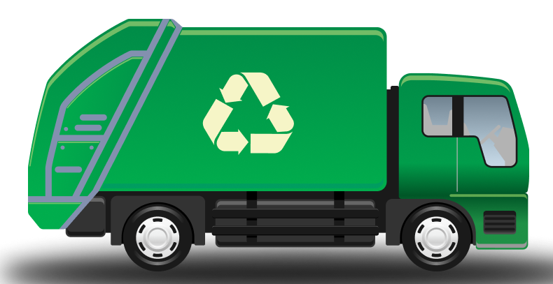
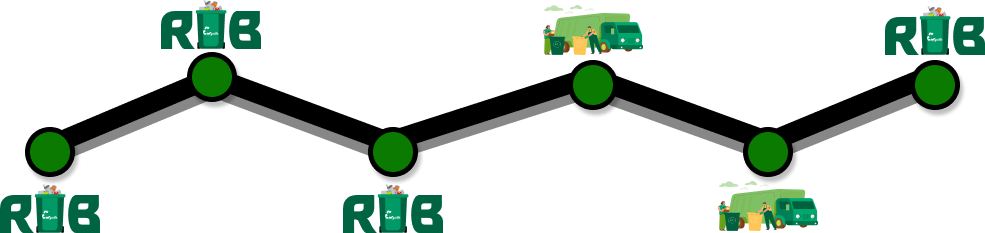

Status Pickup


Status Pengangkutan

Rub - Cycle - Kamis 27 Maret 2022
Rub - Cycle telah menkonfirmasi sampah yang telah anda tukarkan dan akan dijemput oleh petugas
System - Minggu 30 Maret 2022
Menunggu proses pengangkutan oleh petugas dan veritifikasi oleh pihak ketiga
System - Selasa 1 April 2022
Petugas menuju ke alamat yang telah dimasukkan
Petugas - Kamis 3 April 2022
Petugas memilah sampah yang telah dikumpulkan oleh user atau clien
Petugas - Kamis 3 April 2022
Petugas melakukan penimbangan kembali terhadap sampah yang telah siap ditukarkan oleh user atau clien
Petugas - Kamis 3 April 2022
Petugas telah melakukan pengangkutan terhadap sampah yang telah di tukarkan oleh user atau clien
System - Jum’at 4 April 2022
Point telah masuk kedalam akun user yang telah terdaftar